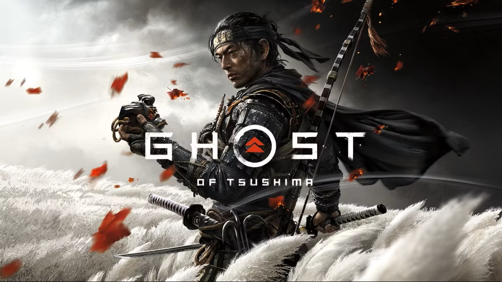

Ghost of Tsushima is a cinematic open-world action-adventure developed by Sucker Punch Productions and published by Sony Interactive Entertainment. Released in 2020, it follows Jin Sakai, a samurai who must embrace unconventional tactics to defend his homeland from a brutal Mongol invasion.
Set in feudal Japan, players explore the island of Tsushima, mastering swordplay, stealth, and archery. The game blends realism and artistry, featuring stunning landscapes, immersive combat, and a powerful story about honor, sacrifice, and transformation.
| Component | Minimum | Recommended |
|---|---|---|
| OS | Windows 10 (64-bit) | Windows 10/11 (64-bit) |
| Processor | Intel Core i5-6600K / AMD Ryzen 5 1600 | Intel Core i7-8700 / AMD Ryzen 7 3700X |
| Memory | 8 GB RAM | 16 GB RAM |
| Graphics | NVIDIA GTX 1060 / AMD RX 580 | NVIDIA RTX 3060 / AMD RX 6700 XT |
| Storage | 75 GB SSD | 75 GB SSD |
Get the official version of Ghost of Tsushima from the verified source below:
🔽 Download from PlayStation Store